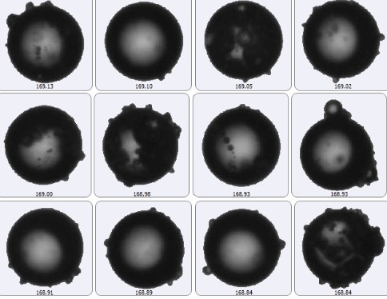
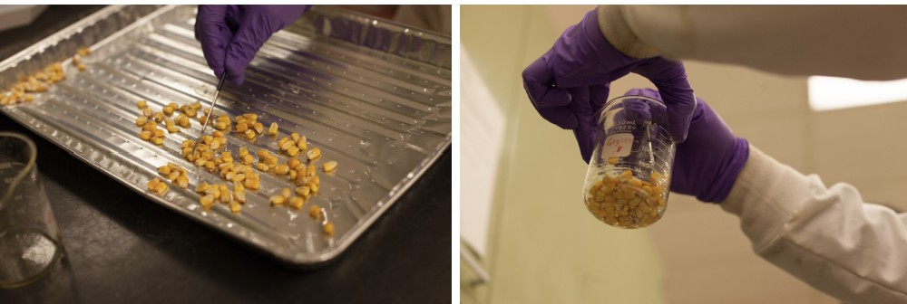
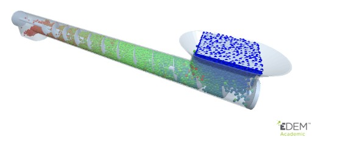
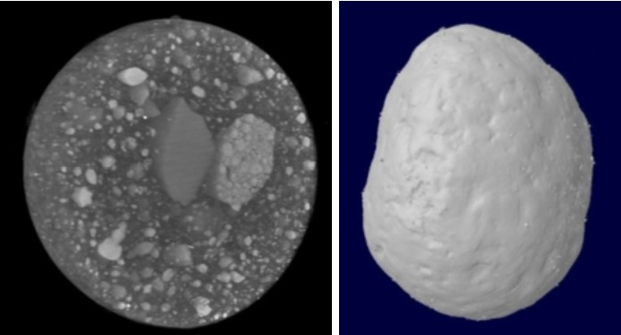
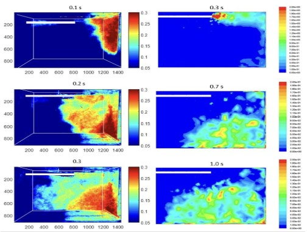

Our Research
Particle and Powder Flow Characterization
Particle and powder flow properties have a major impact on processing and final product quality. Flow properties must be well understood for the design of storage, conveying, and processing equipment. Characterization includes analysis of particle size, shape, surface chemistry, and its relation to bulk characteristics such as dynamic flow and cohesion. Current research activities in this area include characterizing the properties of pet food powders, modified DDGS, wheat flour, and dairy based ingredients

Seed and Grain Processing
Grain-based materials are used in a wide number of industries such as milling, baking, and food and feed manufacturing. Grain milling is a practice that must constantly evolve to keep pace with changing consumer demands. Understanding these materials’ biological, chemical, and physical attributes is a prerequisite to process design and improvement. Our group’s recent research in this area includes studies on sorghum milling methods and wheat flour milling processes.

Modeling Agricultural, Grain, Food, and Feed Particulate Processing
Physics on a particle scale determine a material’s characteristics at the macroscopic level. Analytical models and computer simulations are useful tools to understanding particle-level behavior. Current work focuses on the use of the discrete element method to model a variety of industrial processes involving agricultural, grain, food, and feed materials.

Particle Design
Fertilizer has been widely used to increase the crop yield. However, the low nutrient use efficiency of fertilizer results in economic and environmental problems. Coated fertilizers are considered a solution to not only enhance the nutrient use efficiency but also alleviate the soil and water pollution. The current research aims to design fertilizer particles with high nutrient use efficiency using coating and additive manufacturing methods.

Grain Dust Explosion Prevention
Grain dust explosions are a hazard faced by any industry handling grain-based materials. Our research has shown that grain dust explosions have been occurring at a constant rate in the US over the past decade. We conduct hazard awareness and safety training amongst workers in grain elevators, feed mills, and grain processors. Our group has been involved in collecting data related to grain dust explosions in the US since 2006. Our current research includes studying the pattern of grain dust dispersion and to develop strategies for better monitoring.
